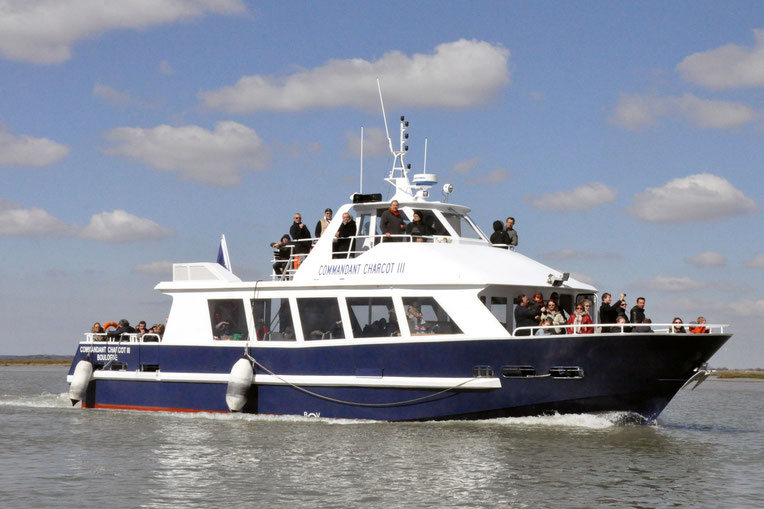

Embarquez à bord du Commandant Charcot III à Saint Valéry sur Somme pour découvrir et admirer l'une des plus belles baies du monde, la Baie de Somme, également classée depuis peu Grand Site de France. Les parcours proposés sont commentés par le capitaine, qui se fera un plaisir de vous transmettre son amour pour la Baie. Au cours de la promenade, différents aspects de la vie de la Baie de Somme et des trois ports qui la bordent St Valery, Le Crotoy et Le Hourdel sont abordés : traditions, architecture et vie sauvage.
